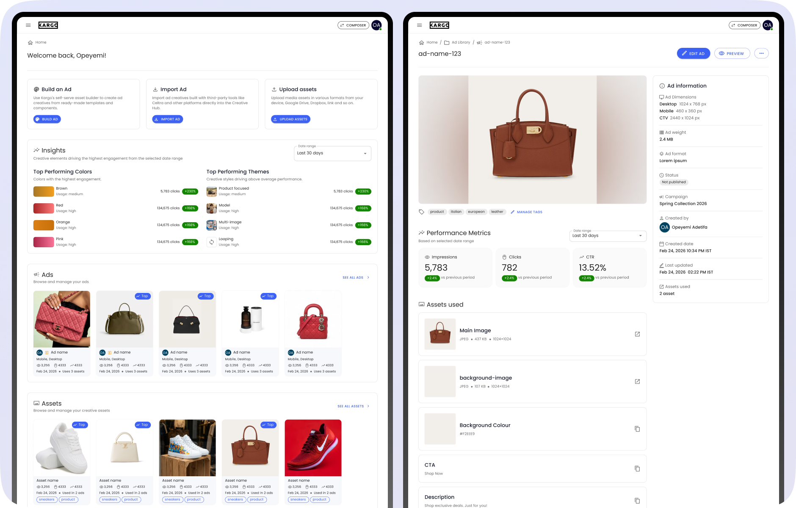
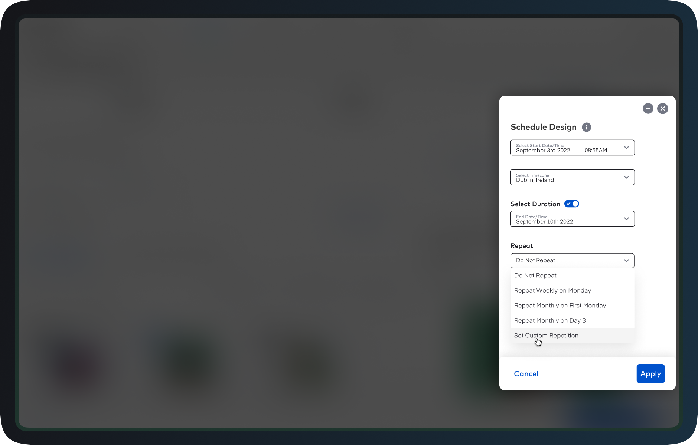
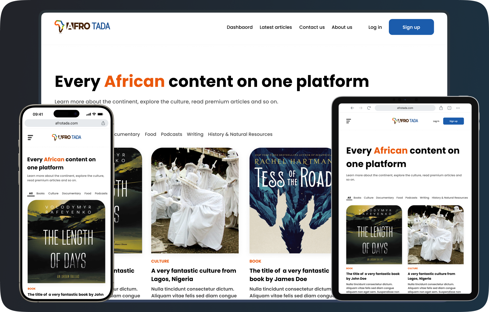
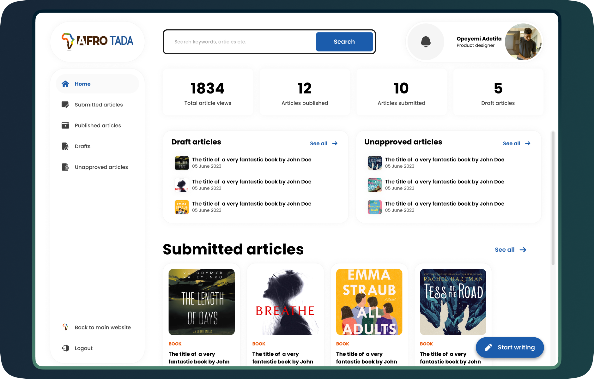
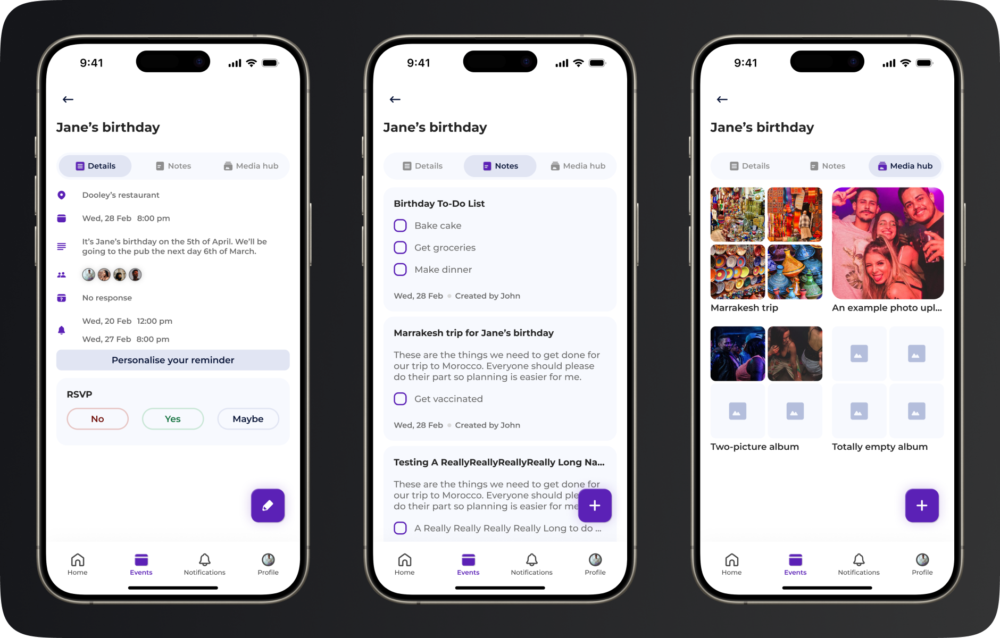
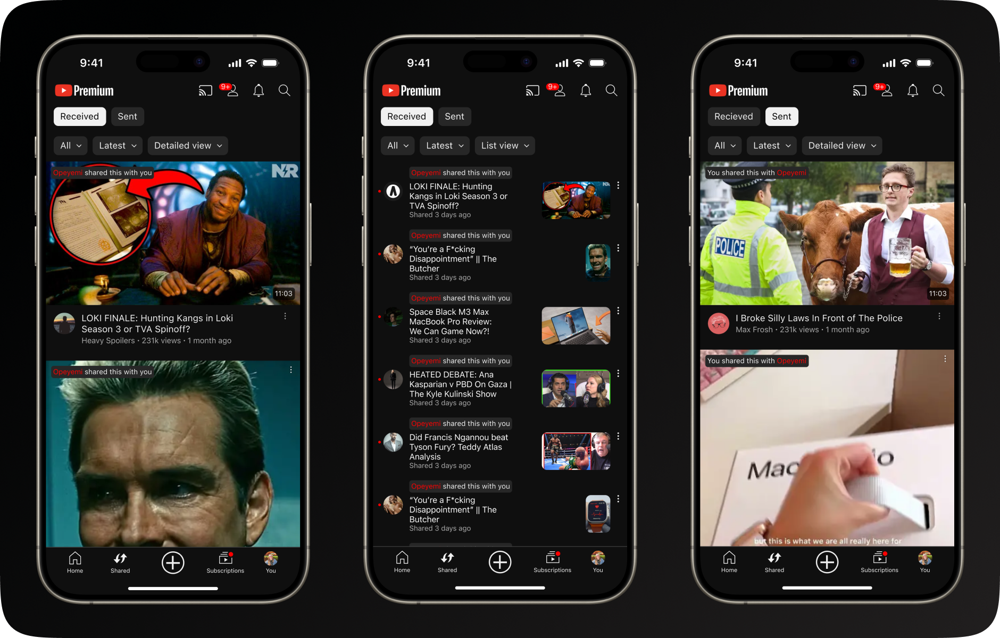
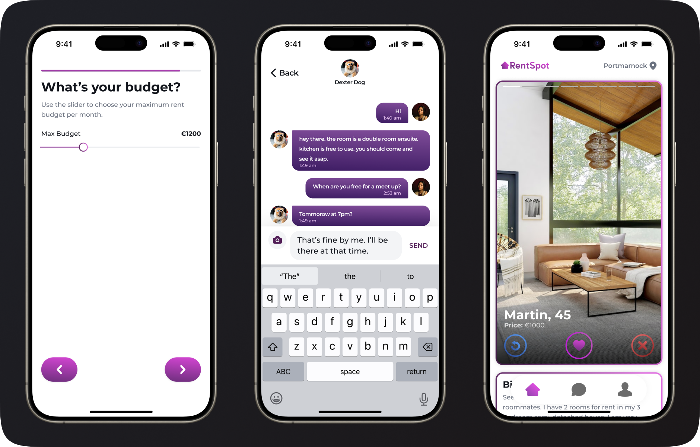
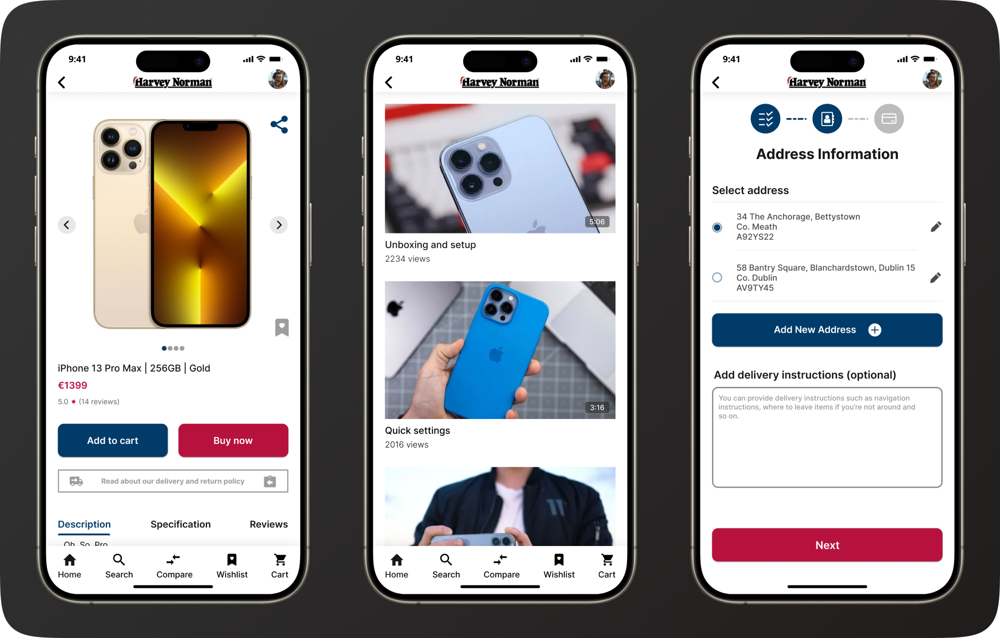
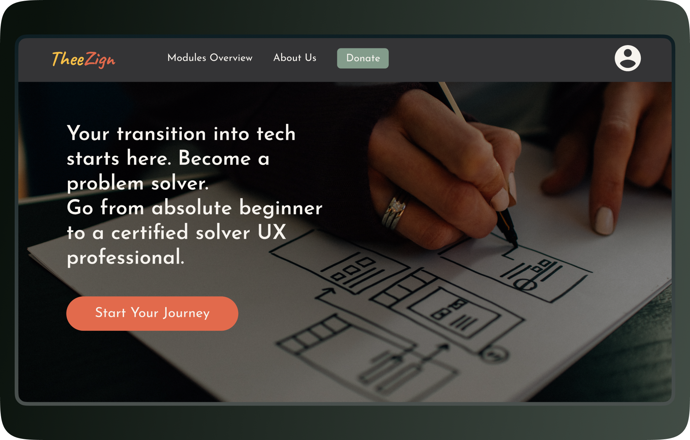

Read through some of my case studies.
Creative Insights
At Kargo, I designed an AI-powered tool that turns ad performance data into creative decisions.
I evolved an AI-powered analysis tool that helps clients connect ad performance findings with evidence and creative decisions. In usability testing, all six participants identified a relevant finding and next step.
Read full case study
Creative Hub
At Kargo, I redesigned the Creative Hub, leading to a 62% drop in support tickets.
I redesigned Kargo’s workspace for managing creative assets and ads. The redesign led to a 62% reduction in support tickets and was preferred by 93% of participants in A/B testing.
Read full case study
Scheduled Designs
At Kargo, I designed a feature that improved the work-life balance of internal and external users.
I designed scheduling controls that let advertising teams automate time-sensitive design changes, helping them avoid manual work outside business hours.
Read full case study
AfroTada redesign
At AfroTada, I redesigned the platform leading to a 39% rise in the average number of monthly visitors.
I redesigned the reader-facing AfroTada experience to improve access to content across devices. Average monthly visitors rose by 39% following the redesign.
Read full case study
AfroTada dashboard
Also at AfroTada, I reimagined the workflow of how our writers contributed to the platform.
I designed a dashboard to streamline article submissions and publishing. The new process saved the team time and saw the number of contributors triple.
Read full case study
Clana
As the capstone project for my M.Sc. in Creative Digital Media & UX program, I made Clana.
For my M.Sc. capstone, I designed and developed an app to help social groups plan events, coordinate tasks and share memories.
Read full case study
YouTube in-app sharing
During my M.Sc. program, I designed a feature to improve video sharing experience on YouTube.
I explored a concept for sharing YouTube videos with friends without leaving the app, using familiar interaction patterns.
Read full case study
RentSpot
I also designed RentSpot during my M.Sc. program to help improve the experience of finding roommates in Ireland.
I helped design a room-finding concept for Ireland focused on mobile usability and clearer information about potential housemates.
Read full case study
Harvey Norman
A while back, I designed an app for Harvey Norman that reduces research time for customers.
As Harvey Norman Ireland didn't have a mobile app, the goal of this project was to create an app that would offer a better shopping experience than what is available on the retail giant’s website.
The solution was a shopping app with a standout feature that allows users to fully understand a product's functionality before buying. This innovative approach streamlines the shopping process by eliminating the need for extra online research. The feature also addresses the needs of customers who can't visit physical stores by offering realistic visual representations of products.
Read full case study
TheeZign
I also made TheeZign. A structured learning platform for aspiring UX professionals.
As someone who's been through the self-learning process in UX design, I know firsthand how overwhelming it can be. Trying to piece together a coherent learning path from countless online tutorials and YouTube videos is a real challenge. It's frustrating and can often lead people to give up on their UX design dreams altogether. This widespread problem was the main reason I worked on this project.
To address this issue, I created TheeZign, a learning platform that takes the guesswork out of mastering UX design. Unlike the scattered approach of self-learning, TheeZign offers a well-structured curriculum. By providing a clear, organised learning path, the need for learners to plan their own educational journey is eliminated. This approach not only makes the learning process more effective but also much more enjoyable, helping aspiring designers stick with their studies and achieve their goals.
Read full case study